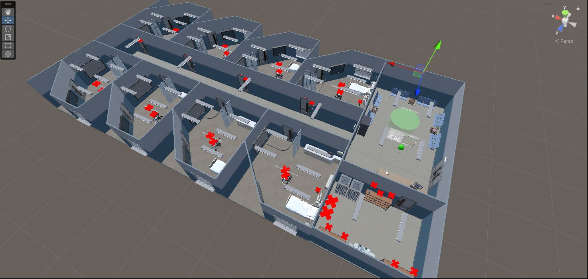
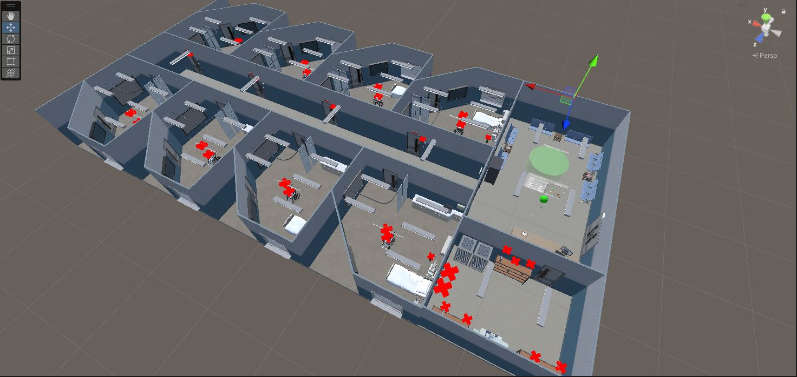
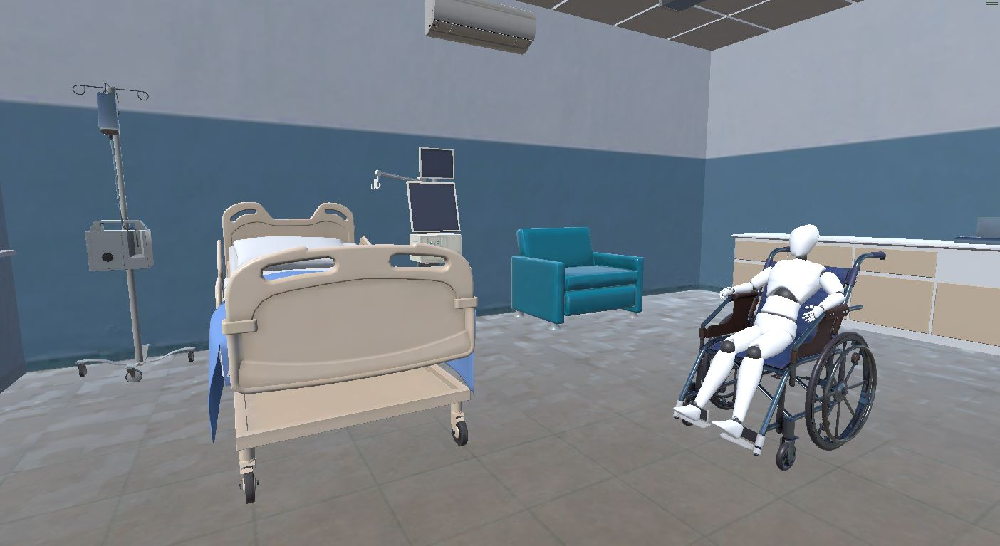
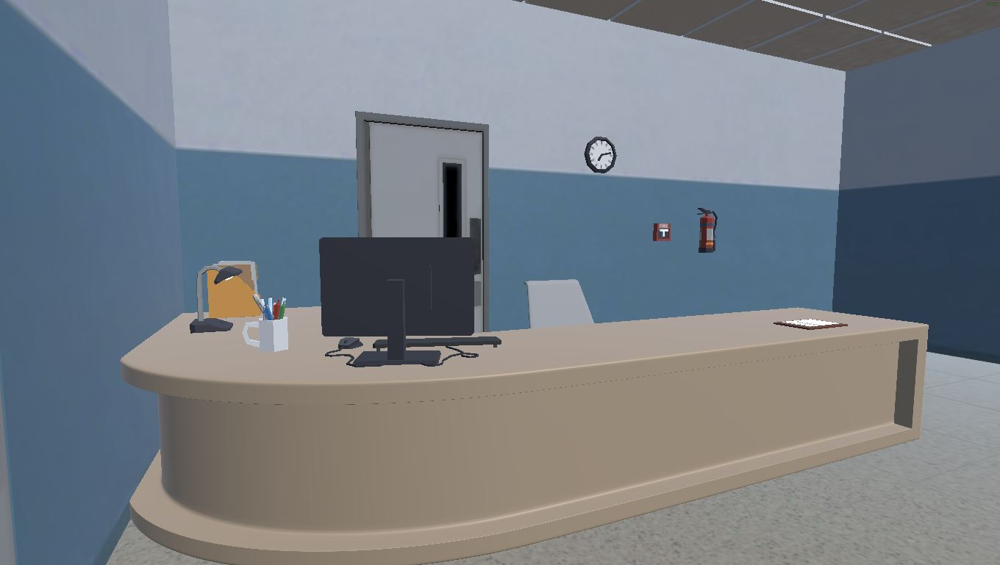
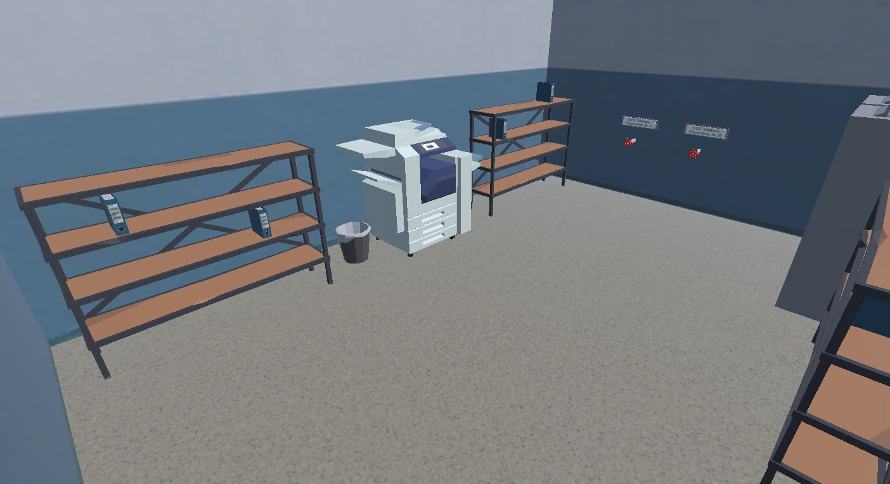

VR Hospital Evacuation Simulation
 

The Cambridge Memorial Hospital (CMH) VR project is a proof of concept for a hospital evacuation training simulator. In the application the user takes on the role of hospital staff tasked with locating and evacuating all patients from their assigned ward. This project includes a tutorial to teach the user about the different tasks they will have to complete during the training exercise. There are options to either time the user to see how fast the training is completed or to set a time limit with which the training will end if the users runs out of time.
This was my capstone project for the Augmented Reality/Virtual Reality course at Conestoga College. For the capstone our class of six took on two projects from real clients, Teledyne and The Cambridge Memorial Hospital. In this project I took the role of lead developer, I programmed and implemented all the tasks, menu functionality, VR interactions and the tutorial scene.
Through this project I have learned about VR development, the XR Interaction Toolkit, OpenXR and more.



UnityVRC#
Features

Mini-map
During the simulation the user has the option to enable a persistant mini-map or view it in the pause screen. The mini-map follows the user and displays an overview of their surroundings, marking nearby tasks that the user must complete.
This is done by creating a second camera placed above the player, casting a orthographic view onto the minimap as a texture. Then by adding markers only visible to the second camera above tasks, each task will be shown on the map as a red X.
Task List
The tasklist, displays all the tasks in the map and their current status. On start the list checks the scene for every instnce of a task and counts them,
void Start()
{
//Get Patients
allPatients = GameObject.FindGameObjectsWithTag("PatientTask");
//Get Room Markers
allRoomMarkers = GameObject.FindGameObjectsWithTag("RoomMarker");
//Get O2 Tanks
allO2Tanks = GameObject.FindGameObjectsWithTag("O2Tank");
//Get patient Documents
allDocuments = GameObject.FindGameObjectsWithTag("Documents");
//Set starting text on clipboard
taskList = GameObject.Find("ClipboardText").GetComponent();
SetupTasks();
}
private void SetupTasks()
{
//If task not complete set as "Task name (tasks done / task count)"
if (!patientTaskTracker) patientTaskTxt = "1. Evacuate patients(" + patientsEvacuated + "/" + allPatients.Length + ")";
if (!roomMarkerTaskTracker) roomMarkerTaskTxt = "2. Toggle door markers (" + roomMarkersToggled + "/" + allRoomMarkers.Length + ")";
if (!oxygenTaskTracker) O2TaskTxt = "3. Shut off oxygen valve (" + tanksShutOff + "/" + allO2Tanks.Length + ")";
if (!documentTaskTracker) documentsTaskTxt = "4. Retrieve medical documents (" + documentsCollected + "/" + allDocuments.Length + ")";
UpdateClipboard();
}